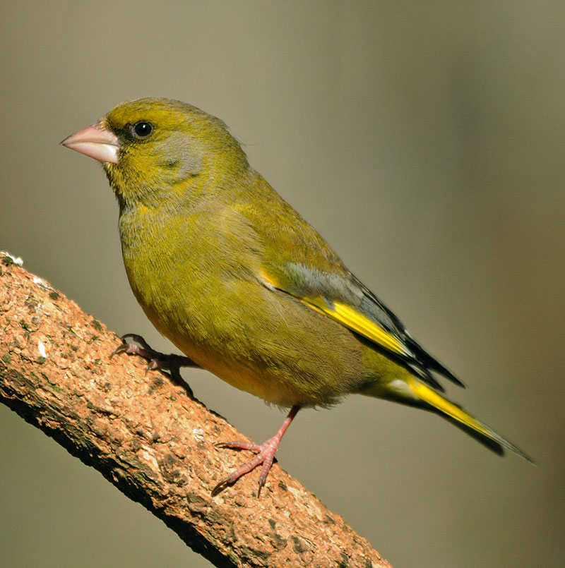

 Its twittering and wheezing song, and flash of yellow and green as it flies, make the greenfinch a truly colourful character. In summer, the adult male is mostly olive-green except for yellow edges to their outer primary wing feathers and tail feathers, and a more yellow rump. The coverts, cheeks and undertail coverts are greyish. During the winter, the male becomes duller. The adult female has grey-brown, slightly streaky upperparts, the underparts are tinged with yellow and there is less yellow on the wings and tail than the male. The bills and legs of both sexes are flesh-coloured. Nesting in a garden conifer, or feasting on black sunflower seeds, the greenfinch is a regular garden visitor, able to take advantage of food in rural and urban gardens. Although quite sociable, they may squabble among themselves or with other birds at the bird table. Greenfinch populations declined during the late 1970s and early 1980s, but increased dramatically during the 1990s. A recent decline in numbers has been linked to an outbreak of trichomonosis, a parasite-induced disease which prevents the birds from feeding properly.
Goldfinches are seed-eaters, feeding on various tree seeds, such as alder and birch, and on thistle, teasel and dandelion seeds, which it can obtain owing to its thin bill and light weight. Niger seed and teasels may attract them in gardens, especially if there are no fields nearby with thistles and dandelions, but they will also feed on sunflower hearts. Make sure you stock up, as they often go around in flocks and have large appetites!
Woodland, Farmland, Urban and suburban
A common countryside bird found in woods and hedges, but mostly found close to man on farmland and in parks, town and village gardens and orchards. Only absent from upland areas without trees and bushes.
The greenfinch can be seen all year round.